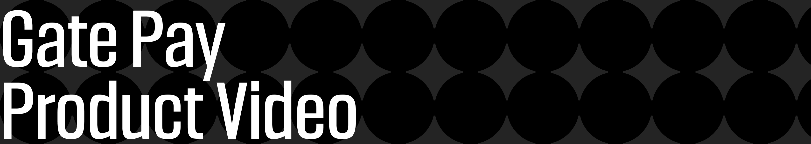
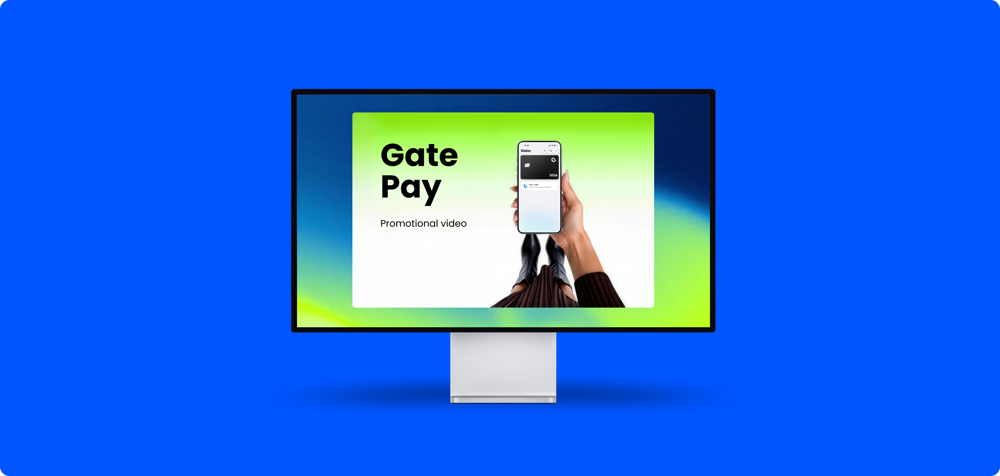
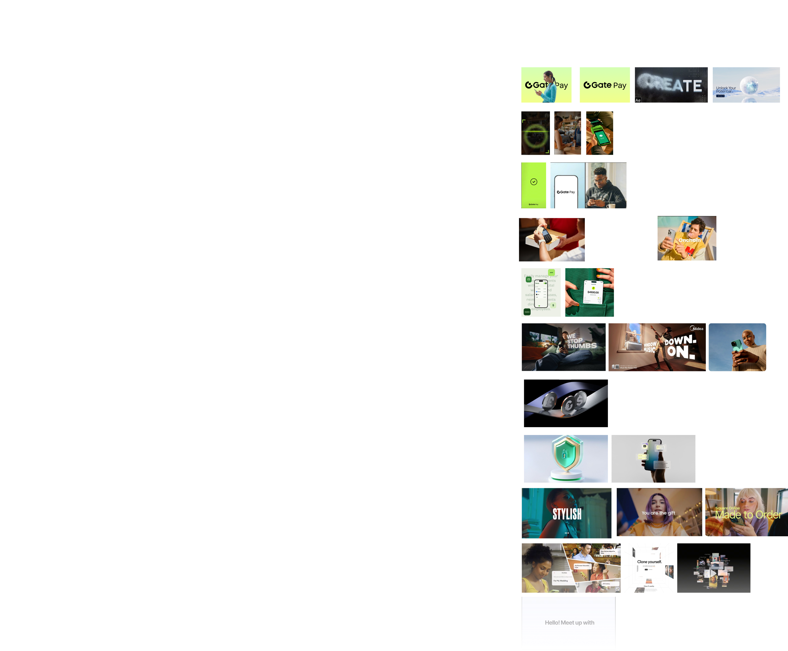

Gate Pay Video
A product promotional video presenting Gate Pay's global payment experience and Web3 capabilities

Gate Pay Global Payment Freedom
Built around the idea of borderless payments, this video shows how Gate Pay uses technology to create a secure, efficient, and seamless digital payment experience. The visual direction follows the Gate Pay brand system, combining international tech polish with user-focused scenes and a future-facing atmosphere.
Character Settings
Character A: young male digital entrepreneur, Asian face. Prompt: "Asian young adult male, tech entrepreneur style, confident expression, wearing smart casual outfit, studio lighting --v 7 --style raw"
Character B: female freelancer, Western face. Prompt: "White female freelancer, working on laptop at cafe, casual chic outfit, natural light --v 7 --style raw"
Other Settings
Duration: 60s
Visual style: futuristic intelligent scenes with a tech-realistic look, combining user scenarios, intelligent UI motion, and a clean bright background.
Music / rhythm: electronic synth with progressive drums, matched to camera transitions to express product professionalism and a future-facing tone.

Video Storyboard

Video Presentation
Online playback: https://www.yuque.com/u48984516/ktobpr/narq1xvloy4mto6c/edit
Thank you for reviewing my case study.
You are welcome to explore my other work, experiments, and selected projects. For collaboration inquiries, please contact me at grey340611@gmail.com.